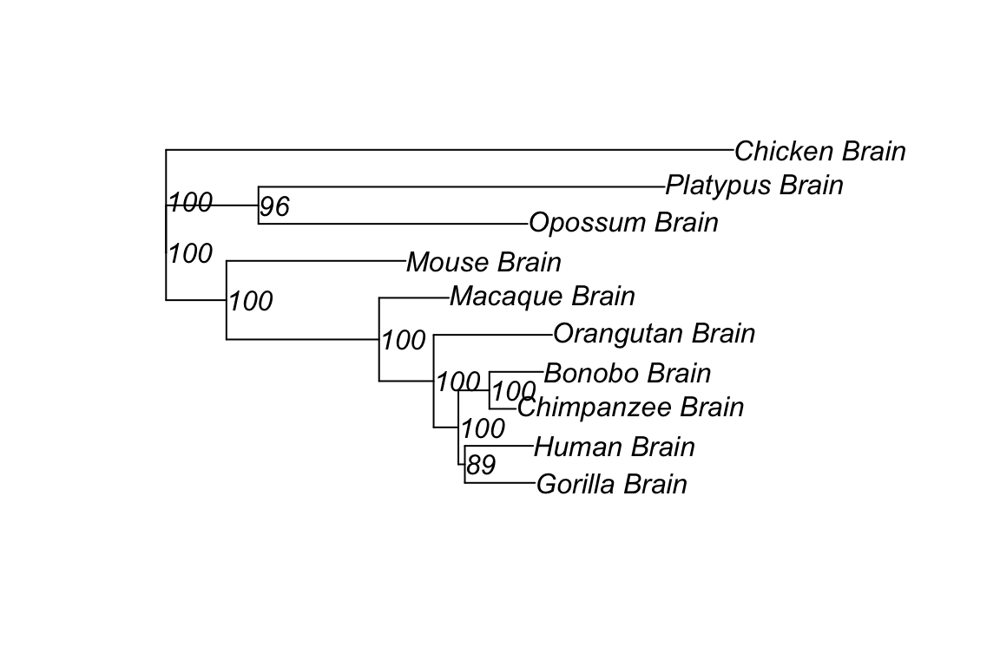

Chapter 4 Pairwise Expression Distance and Expression Tree-Making
4.1 Theory
4.1.1 The Ornstein-Uhlenbeck (OU) model of transcriptome evolution
It is generally believed that the expression level of a gene, denoted by \(x\), is subject to the stabilizing selection to maintain the optimum during the course of evolution. Consequently, the motion of the expression level (\(x\)) can be described by the so-called Ornstein-Uhlenbeck (OU) process(Hansen and Martins 1996 Bergmann, Ihmels, and Barkai (2004)Butler and King (2004)). Briefing speaking, while the random force driving the expression level away from the optimum, the deterministic force will pull the expression level back to the optimum. It has been shown that the distribution density of \(x\) after \(t\) time units since the initial value \(x_0\), denoted by \(OU\left(x\mid x_0,\theta\right)\), is normal with the mean \(E\left[x\mid x_0\right]\)and variance \(V\left(x\mid x_0\right)\) given by
\[ \begin{split} E\left[x\ \mid\ x_0\right]\ &=\ \mu\left(1-e^{-\beta t}\right)\ +\ z_0e^{-\beta t} \\ V\left[x\ \mid\ x_0\right]\ &=\frac{1-e^{-2\beta t}}{W} \end{split}\tag{1.1} \]
respectively, where \(\theta\) is for the parameter vector: \(\mu\) is the optimal expression value, \(\beta\) the rate of expression evolution, and \(W\) the strength of expression conservation.
4.1.2 Transcriptome evolution between species
Consider a simple two-stage scenario of transcriptome evolution that consists of two species that diverged \(t\) time units ago (Figure 1A).
Figure 4.1: Figure1. The schematic of transcriptome evolution along a phylogeny
The first stage is the evolutionary lineage from the tissue ancestor (denoted by node \(Z\)) to the common ancestor of two species (denoted by node \(O\)), with a span of \(\tau\) evolutionary time units. Given the initial expression value \(z_0\) at node \(Z\), the density of \(x_0\) (the ancestral expression level at node \(O\)) is given by \(OU\left(x\mid x_0,\ \theta_0\right)\) where the parameter vector \(\theta_{0}=\left(\mu,\ \beta\tau,\ W\right)\).
In the second stage, let \(x_1\) and \(x_2\) be the expression levels of an orthologous gene pair, respectively. Given the ancestral expression level (\(x_0\)) at node \(O\), the density of \(x_1\) follows \(OU\left(x_1\mid x_0;\ \theta_{1}\right)\), and that of \(x_2\) follows \(OU\left(x_2\mid x_0;\ \theta_{2}\right)\), respectively, where \(\theta_{1}=\left(\mu,\ \beta_{1}t,\ W_{1}\right)\) and \(\theta_{2}=\left(\mu,\ \beta_{2}t,\ W_{2}\right)\). If transcriptome evolution is independent between lineages, the joint density of \(x_1\) and \(x_2\) conditional of \(x_0\) is simply given by \(P\left(x_1,\ x_2\ \mid\ x_0\right)=OU\left(x_1\mid x_0;\ \theta_1\right)OU\left(x_2\mid\ x_0;\ \theta_2\right)\). Since \(x_0\) follows the density \(\pi\left(x_0\right)=OU\left(x_0\mid z_0;\ \theta_{0}\right)\), one can show that the joint density of \(x_1\) and \(x_2\)
\[P\left(x_1,x_2\right)=\int_{-\infty}^{\infty}P\left(x_1,x_2\mid x_0\right)\pi\left(x_0\right)dx_0\tag{1.2}\] follows a normal distribution, with the mean vector \[ \begin{split} E\left[x_1\right]&=\mu\left(1-e^{\beta_1t}\right)+\left[\mu\left(1-e^{\beta_0\tau}\right)+z_0e^{\beta_0\tau}\right]e^{-\beta_1t} \\ E\left[x_2\right]&=\mu\left(1-e^{\beta_2t}\right)+\left[\mu\left(1-e^{\beta_0\tau}\right)+z_0e^{\beta_0\tau}\right]e^{-\beta_2t} \end{split}\tag{1.3} \]
and the variance-covariance matrix \(\boldsymbol{V}\)given by
\[ \begin{split} V_{11}&=\frac{1}{W_1}+\left(\rho^2-\frac{1}{W_1}\right)e^{-\beta_1t}\\ V_{22}&=\frac{1}{W_2}+\left(\rho^2-\frac{1}{W_2}\right)e^{-\beta_2t}\\ V_{12}&=\rho^2e^{-\left(\beta_1+\beta_2\right)t} \end{split} \tag{1.4} \]
where \(\rho^2=V\left(x_0\mid\ z\right)=\frac{\left(1-e^{-\beta\tau}\right)}{W}\) is the variance of \(x_0\) at root \(O\).
4.1.3 The estimation problem of expression distance
Consider two RNA-seq datasets of the same tissue from species-1 and species-2, respectively, which include \(N\) orthologous genes. For the \(k\)-th orthologous pair, let \(x_{k,1}\) and \(x_{k,2}\) be the expression levels, respectively,\(k=1,\cdots,N\). It is straightforward to calculate the expression variances and their covariance, denoted by \(Var(X_1)\), \(Var(X_2)\) and \(Cov(X_1, X_2)\), respectively. Meanwhile, the last equation of Eq.(1.4) shows that, theoretically, the expression covariance between species (\(V_{12})\) decays exponentially with the component (\(\beta_1+\beta_2\)), providing a foundation to define the expression distance between two species by \[D_{12}=\left(\beta_1+\beta_2\right)t=2\beta t\tag{1.5}\] where \(\beta=\frac{\left(\beta_1+\beta_2\right)}{2}\) is the rate of expression evolution (averaged over two lineages). However, the difficulty to estimate \(D_{12}\) is two-folds
- the ancient variance (\(\rho^2\)) at root \(O\) is usually unknown.
- equations in Eq.(4) are valid only when the optimal expression level (\(\mu\)) is constant among genes. We address these issues as follows.
4.1.4 Estimation of expression distance under the stationary OU model
We invoke the stationary OU process (sOU) to estimate the unknown ancestral variance \(\rho^2\). It has two assumptions:
- the evolutionary span (\(\tau\)) between the tissue ancestor (\(Z\)) and the species ancestor (\(O\)) is so large that the variance at root \(O\) approaches to \(\rho^2=1/W\);
- after the speciation, the strength of expression conservation (\(W\)) remain constant between species. Under the constant-\(\mu\) assumption, from Eqs.(1.3) and (1.4) we then have \(E\left[x_1\right]=E\left[x_2\right]=\mu\), \(V_{11}=V_{22}=\frac{1}{W}\), as well as the last equation of Eq.(1.4) by \[V_{12}=\frac{e^{-2\beta t}}{W}\tag{1.6}\] After calculating the Pearson coefficient of expression correlation, \(r_{12}=\frac{Cov\left(X_1,X_2\right)}{\sqrt{Var\left(X_1\right)Var\left(X_2\right)}}\), we obtain a simple formula for estimating the expression distance, that is, \[D_{12}=-\ln\left(r_{12}\right)=-\ln\left(1-P_{12}\right)\tag{1.7}\] When \(r_{12}\) is close to 1 in the case of closely-related species, \(D_{12} \approx 1- r_{12}\), i.e., the Pearson distance \(P_{12}=1- r_{12}\).
4.1.5 Expression distance estimation when expression optima vary among genes
While expression distance estimation based on Eq. (1.7) is intuitively simple, we have realized that the implied constant-\(\mu\) assumption is unrealistic. Because the optimal expression level (\(\mu\)) actually varies considerably among different genes, neglecting this variation may lead to an underestimation. Here we develop a new method to correct this bias.
Suppose that \(\mu\) varies among genes according to a normal distribution with mean zero and variance \(V_{\mu}\). Under the stationary OU model, we can extend Eq.(1.4) as follows:
the expression variances are given by \(V_{11}=V_{22}=1/W+V_{\mu}\) and the covariance by \[V_{12}=\frac{e^{-2\beta t}}{W}+V_{\mu}\tag{1.8}\] It follows that the Pearson coefficient of correlation \(r_{12}=\frac{V_{12}}{\sqrt{\left[V11,\ V22\right]}}\) can be written as \[r_{12}=\frac{\left(e^{-2\beta t}+WV_{\mu}\right)}{\left(1+W_{\mu}\right)}=\pi+\left(1-\pi\right)^{e^{-2\beta t}}\tag{1.9}\] where \(\pi=\frac{WV_{\mu}}{\left(1+WV_{\mu}\right)}\), which measures the relative \(\pi=0\) means among genes. While \(\pi=0\) means a constant-\(\mu\) among genes, \(\pi=1\) means indicates a very strong \(\mu\) variation among genes. \(r_{12}\rightarrow\pi\) as \(t\rightarrow \infty\). From Eq.(9) we obtain a general formula to estimate the express distance \(D_{12}=2\beta t\) as follows \[D_{12}=-\ln\frac{\left(r_{12}-\pi\right)}{\left(1-\pi\right)}=-\ln\left[1-\frac{P_{12}}{1-\pi}\right]\tag{1.10}\] where \(P_{12}=1-r_{12}\) is the Pearson distance. Apparently, Eq.(1.10) is reduced to Eq.(1.7) when \(\pi=0\).
4.1.6 Estimation of \(\pi\)
When Eq.(1.10) is applied in the evolutionary analysis of RNA-seq data, we have to know the parameter \(\pi\), which can be estimated when RNA-seq data of the same tissue from \(n>=3\) species are available.
Let \(x_k=\left(x_{1k},\cdots x_{nk}\right)\) be the across-species expression profile of the \(k\)-th orthologous gene; \(k=1,\cdots N\).
We first calculate the mean expression level of each \(k\)-th orthologous gene, denoted by \(x_{.k}\), and then calculate the variance, \(Var\left(x_.\right)\), of \(x_{.k}\) over all \(N\) genes. It appears that \(Var\left(x_.\right)\) is an asymptotically unbiased estimate of \(V_\mu\). Next, the strength of expression conservation (\(W\)) can be estimated by a simple method in the following part.
It follows that \(\pi\) can be estimated by
\[\pi=\frac{Var\left(x_{.}\right)W}{1+WVar(x_.)}\tag{1.11}\]
4.2 Case Study: Expression Tree Building
In here, we will give an example to build a character tree from expression data (expression phylogeny) applying the above-mentioned methods.
TreeExp can be loaded in usual way:
library(TreeExp)We first load the datasets created from six tissues’ expression data of nine tetrapod species
data("tetraExp")4.2.1 Distance matrix
First, we generate an expression distance matrix of these nine tetrapod species:
dismat_pea <- expdist(tetraExp, taxa = "all",
subtaxa = "Brain",
method = "pea")
as.dist(dismat_pea)## Human_Brain Chimpanzee_Brain Bonobo_Brain Gorilla_Brain
## Chimpanzee_Brain 0.03928696
## Bonobo_Brain 0.05396840 0.02661862
## Gorilla_Brain 0.04542102 0.04346246 0.05571070
## Orangutan_Brain 0.07440973 0.06649678 0.07417594 0.06650759
## Macaque_Brain 0.07097455 0.07025971 0.07569084 0.07142852
## Mouse_Brain 0.14753703 0.14734046 0.14569873 0.15774612
## Opossum_Brain 0.21459736 0.21023241 0.20623679 0.22219040
## Platypus_Brain 0.25207183 0.24840593 0.24225669 0.26264602
## Chicken_Brain 0.27146218 0.27435186 0.26609731 0.27169109
## Orangutan_Brain Macaque_Brain Mouse_Brain Opossum_Brain
## Chimpanzee_Brain
## Bonobo_Brain
## Gorilla_Brain
## Orangutan_Brain
## Macaque_Brain 0.07718357
## Mouse_Brain 0.15908149 0.12541882
## Opossum_Brain 0.22389819 0.19697269 0.17580943
## Platypus_Brain 0.26310593 0.23960340 0.22327614 0.20305065
## Chicken_Brain 0.26892835 0.24476930 0.23916935 0.28310733
## Platypus_Brain
## Chimpanzee_Brain
## Bonobo_Brain
## Gorilla_Brain
## Orangutan_Brain
## Macaque_Brain
## Mouse_Brain
## Opossum_Brain
## Platypus_Brain
## Chicken_Brain 0.28657956expdist function can calculate expression distance directly through the taxaExo object. It will extract the expression values and \(log2\)-transform the values according to the “taxa” and “subtaxa” specified in the options.
The default method “pea” is to calculate pair-wise distances by Pearson distance, which equals 1-Pearson’s coefficient of expression level.
Besides “pea” , there are numbers of alternative methods to calculate pair-wise expression distances, like“sou”, “sou_v”,“pea”, “spe”,“euc”, “cos”, “jsd”, “tani”, “jac”.
Of particular, “sou” means the general sOU distance method and “sou_v” means the special sOU model when expression optima vary among genes that we introduced above.
For comparison, we apply “pea”,“sou”and “sou_v” methods to calculate the paired expression distances between species.
Distance matrix applying “sou” method:
dismat_sou <- expdist(tetraExp, taxa = "all",
subtaxa = "Brain",
method = "sou")
as.dist(dismat_sou)## Human_Brain Chimpanzee_Brain Bonobo_Brain Gorilla_Brain
## Chimpanzee_Brain 0.04007952
## Bonobo_Brain 0.05547931 0.02697931
## Gorilla_Brain 0.04648489 0.04443524 0.05732270
## Orangutan_Brain 0.07732362 0.06881087 0.07707107 0.06882245
## Macaque_Brain 0.07361915 0.07284999 0.07870868 0.07410792
## Mouse_Brain 0.15962550 0.15939495 0.15747137 0.17167379
## Opossum_Brain 0.24155877 0.23601657 0.23097009 0.25127352
## Platypus_Brain 0.29044833 0.28555890 0.27741060 0.30468720
## Chicken_Brain 0.31671573 0.32069003 0.30937883 0.31702999
## Orangutan_Brain Macaque_Brain Mouse_Brain Opossum_Brain
## Chimpanzee_Brain
## Bonobo_Brain
## Gorilla_Brain
## Orangutan_Brain
## Macaque_Brain 0.08032494
## Mouse_Brain 0.17326052 0.13401016
## Opossum_Brain 0.25347156 0.21936656 0.19335350
## Platypus_Brain 0.30531112 0.27391514 0.25267038 0.22696416
## Chicken_Brain 0.31324380 0.28073202 0.27334448 0.33282915
## Platypus_Brain
## Chimpanzee_Brain
## Bonobo_Brain
## Gorilla_Brain
## Orangutan_Brain
## Macaque_Brain
## Mouse_Brain
## Opossum_Brain
## Platypus_Brain
## Chicken_Brain 0.33768435Distance matrix applying “sou_v” method:
dismat_sou_v <- expdist(tetraExp, taxa = "all",
subtaxa = "Brain",
method = "sou_v")
dismat_sou_v$pi## [1] 0.4321824as.dist(dismat_sou_v$distance)## Human_Brain Chimpanzee_Brain Bonobo_Brain Gorilla_Brain
## Chimpanzee_Brain 0.07169946
## Bonobo_Brain 0.09987040 0.04801322
## Gorilla_Brain 0.08337321 0.07963103 0.10326685
## Orangutan_Brain 0.14046409 0.12455399 0.13999038 0.12457556
## Macaque_Brain 0.13352606 0.13208832 0.14306392 0.13444018
## Mouse_Brain 0.30087772 0.30041013 0.29651329 0.32546876
## Opossum_Brain 0.47470846 0.46242662 0.45131469 0.49643952
## Platypus_Brain 0.58686287 0.57531948 0.55625069 0.62092606
## Chicken_Brain 0.65024075 0.66003933 0.63229985 0.65101349
## Orangutan_Brain Macaque_Brain Mouse_Brain Opossum_Brain
## Chimpanzee_Brain
## Bonobo_Brain
## Gorilla_Brain
## Orangutan_Brain
## Macaque_Brain 0.14610174
## Mouse_Brain 0.32873050 0.24958856
## Opossum_Brain 0.50139288 0.42601631 0.37051757
## Platypus_Brain 0.62243425 0.54813379 0.49958580 0.44254159
## Chicken_Brain 0.64172713 0.56399841 0.54681221 0.69032820
## Platypus_Brain
## Chimpanzee_Brain
## Bonobo_Brain
## Gorilla_Brain
## Orangutan_Brain
## Macaque_Brain
## Mouse_Brain
## Opossum_Brain
## Platypus_Brain
## Chicken_Brain 0.70259882Note that method “sou_v” will return an object of list which contains two element. The firt one is the estimated value of parameter \(\pi\). The second one is the distance matrix using “sou_v” method.
dismat_sou_v$pi## [1] 0.4321824Comparing the distance values calculted by the three methods, we can approximately draw a conclusion that while the optimal expression level(\(\mu\)) actually varies considerably among different genes, neglecting this variation may lead to an underesitmation of expression distance.
Also, if you already have a data frame with normalized expression values, there are internal functions available for creating expression distance matrix.
Function exptabTE is helpful to generate an expression level table from the taxaExp object and \(log2\)-transform the values. Also, “taxa”" and “subtaxa”" can be set by users.
For instance,
expression_table <- exptabTE(tetraExp, taxa = "all",
subtaxa = "Brain")
dismat <- dist.pea(expression_table)
dismat <- dist.sou(expression_table)
dismat <- dist.sou_v(expression_table)If you have your own expression data frame in the format as the “expression_table” here, it will do fine:
dismat <- dist.pea(your_own_dataframe)
colnames(dismat) <- colnames(your_own_dataframe)
rownames(dismat) <- colnames(dismat)4.2.2 Expression character tree
After the expression distance matrix is created, we can construct character tree by Neighbor-Joining method, and bootstrap values based on re-sampling orthologous genes with replacements can also be generated by boot.exphy function:
library('ape')
##### build NJ tree
tr <- NJ(dismat_sou)
### estract expression table of Brain tissue from 'tetraExp'
expression_table <-exptabTE(objects = tetraExp,taxa = 'all',
subtaxa = 'Brain')
### root the tree using 'Chicken_Brain' as outgroup
tr <- root(tr, "Chicken_Brain", resolve.root = TRUE)
###### generating bootstrap values of the tree
bs<-boot.exphy(phy=tr, x = expression_table, method = 'sou',
outgroup = 'Chicken_Brain', B = 100)
### assign bootstrap values to the "node.label" of the tree
tr$node.label = bs
### plot the tree
plot(tr, show.node.label = TRUE)
Note that the goal of root step is to give an better interpretation on the phylogentic relationships of trascriptome data.
Essentially, the tree build by NJ method itself is an unrooted tree. Though root function adds a ‘root’ node to the tree, the branch length between root node and its neighbor internal node is still 0. In other words, root step may be only for tree presentation, and it is not needed when a phylogentic tree should be used as input parameter in the following analysis (such like Ancestral Transcriptome Inference).
By now, an expression character tree is successfully constructed. The tree shows expression patterns’ similarities in selected genes of designated species. The expression tree is largely in accordance with species tree with minor discrepancy.
Phenomenon of evolutionary history dominates the evolutionary expression pattern can be described as phylogenetic signals. One way to interpret highly consistent expression character tree is that expression levels of transcriptome, representing the regulatory changes, accumulated over time. Though not as concrete as sequence data, expression levels generated from transcriptome data across species show strong phylogenetic signals.
References
Bergmann, Sven, Jan Ihmels, and Naama Barkai. 2004. “Similarities and Differences in Genome-Wide Expression Data of Six Organisms.” PLoS Biology 2:e9. https://doi.org/10.1371/journal.pbio.0020009.
Butler, and King. 2004. “Phylogenetic Comparative Analysis: A Modeling Approach for Adaptive Evolution.” The American Naturalist 164:683. https://doi.org/10.2307/3473229.
Hansen, Thomas F, and Emilia P Martins. 1996. “Translating Between Microevolutionary Process and Macroevolutionary Patterns: The Correlation Structure of Interspecific Data.” Evolution 50:1404. https://doi.org/10.2307/2410878.